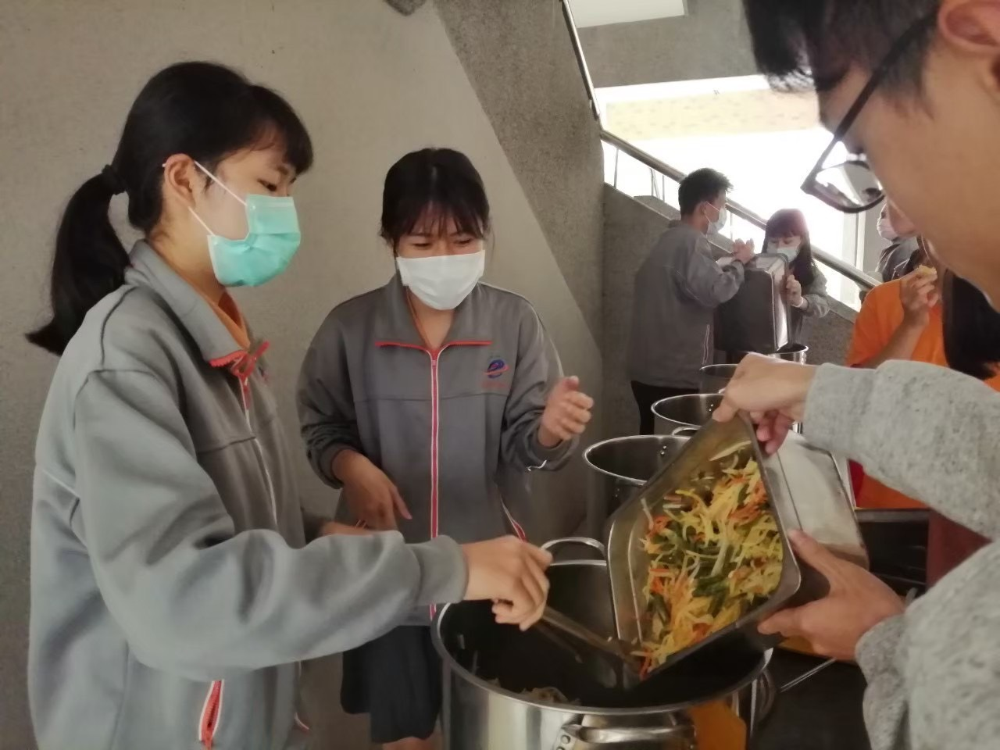
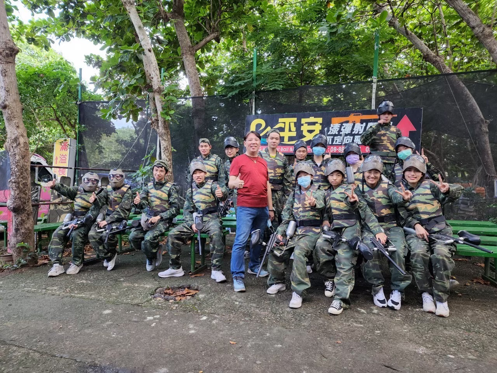
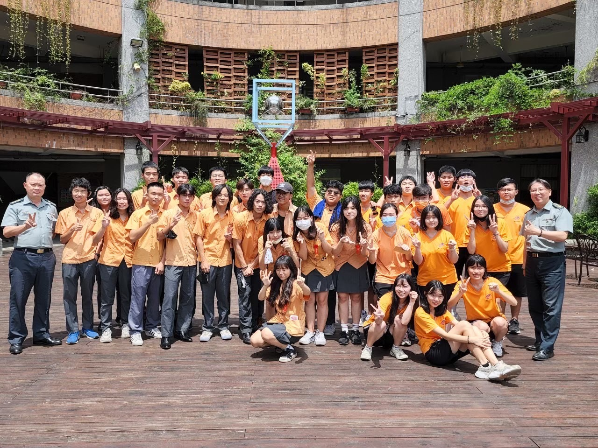
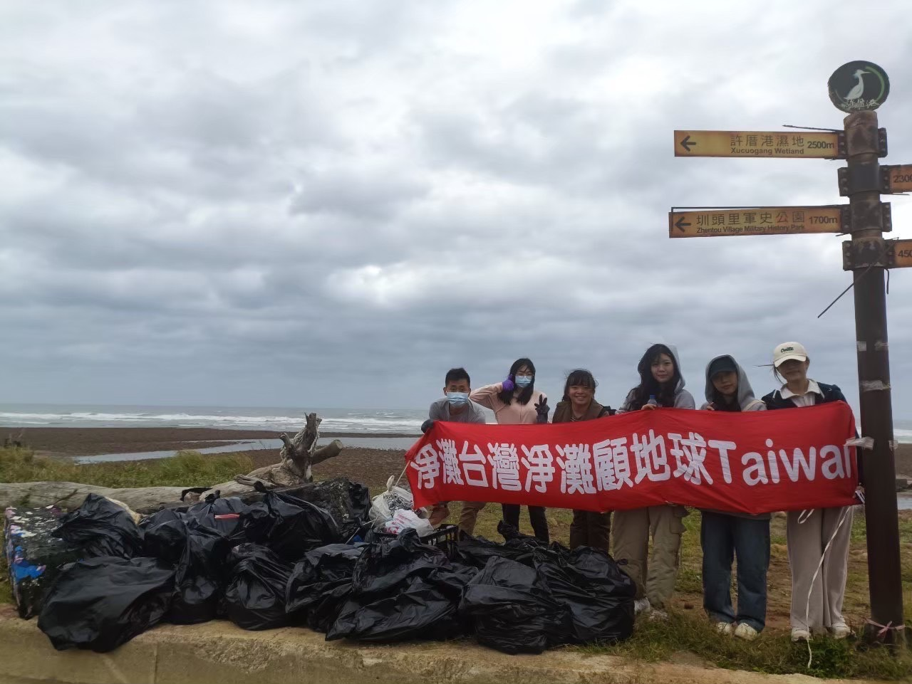

About Me
劉欣柔
中原大學資訊管理學系
鎖定目標，全力以赴!!!!!!
一個樂觀且親切的人，總是以積極的態度面對生活中的挑戰，並且細心地關注周圍的人與事。對畫畫充滿熱情，透過畫筆表達情感與創意，這不僅是放鬆的方式，也是自我反思的途徑。而在處事上，細心的掌握細節，避免錯誤並提升效率。相信在每一個挑戰中，只要保持樂觀心態，就能持續成長並邁向更好的未來。
Experience
聖食計畫
在高中時期，我參與了『聖食計畫』志工活動，負責中午協助收集剩餘營養午餐，並將其捐贈給無家可歸者。該計畫與人安基金會合作，因創辦人注意到學校營養午餐的剩餘菜餚不少，提出『剩食變聖食』的理念，旨在避免浪費並讓街友獲得溫飽。作為志工隊的一員，我與其他成員分工協作，分別負責各班餐桶的收集和搬運，以在短時間內有效控管食物的安全與衛生。此外，我還詳細紀錄當天剩餘的菜色，以便後續統計和向學校提供改進建議，促進營養午餐菜單的改善，這段經歷不僅培養了我的團隊合作能力，還讓我學會如何解決問題，並增強了我的責任感，透過這項經歷，我深刻體會到食物的珍貴和無家可歸者生活的不易，雖然過程中犧牲了午休時間，但我覺得這樣的貢獻十分值得。
糾察隊-幹部訓練
在高中時期，我參加了糾察隊並擔任總務職位，負責管理新進隊員、監督學生儀容及維護交通安全。除了日常的學校工作，我們還會舉辦各項活動。我曾在幹部訓練中擔任總召，並成功向學校申請經費，將訓練地點從學校移至墾丁，並參與多個與國防有關的活動。這段經歷讓我學會如何在團隊中發揮領導作用，並負責活動籌劃、撰寫企劃書，這不僅豐富了我的高中生活，也讓我獲得了寶貴的回憶與成長。


淨一個乾淨的灘
在大一的管理課期末報告中，我和我的組員代表中原大學資管系參與了『淨灘臺灣淨灘顧地球Taiwan』的淨灘活動。我擔任組長，負責領導並聯繫淨灘團隊，和大家一起清理大園黃金海岸的海灘垃圾。我們還製作了當天活動的紀錄影片，旨在紀錄當天活動的情況，和分享淨灘的好處及垃圾對海洋生態的危害。儘管當天天氣惡劣，我們仍成功收集了107.5公斤的海廢，藉由這次活動，不僅讓我鍛鍊了協調和剪輯能力，也加深了我對環境保護的認識。

淨灘影片
Skills
Education
東華國中 2017-2020
惠文高中 2020-2023
中原大學 資管系 2023~now